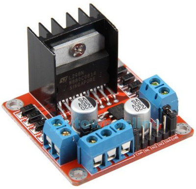
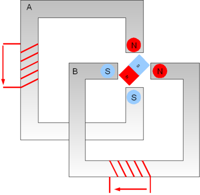
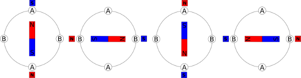
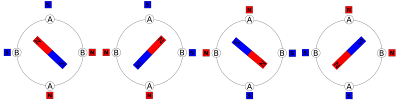
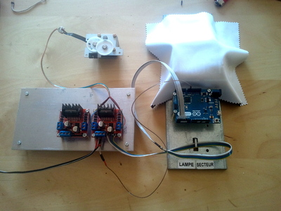
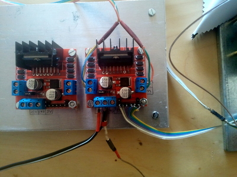
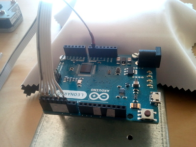

Avant de commencer
On va d’abord s’équiper un peu; il nous faut:
- Un moteur pas à pas: on fera de la récup sur une vieille imprimante ou un vieux scanner
- Un microcontrôller: pour me simplifier la vie, j’ai utilisé un Arduino. Mais on peut rapidement adapter l’expérience sur un Microship.
- un circuit de contrôle: C’est un circuit de puissance pour alimenter les bobinages du moteur. Ce circuit supporte des intensité assez élevée. Concrètement, si l’on branchait directement un microcontrôller sur un moteur pas à pas, on le flinguerait rapidement. Vous trouverez ce genre de circuit en recherchant “L298” sur ebay (prenez le moins cher).

Principe du moteur
La plupart des moteurs de récup, sont des moteurs bipolaires; c’est à dire qu’ils ont deux paires de bobines. Pour être sûr d’avoir le bon type de moteur entre vos mains, comptez le nombre de fil d’alimentation. Il doit y avoir exactement 4.

Maintenant, il faut trouver les deux paires de fil; Utilisez un multimètre pour trouver les deux fils qui présentent une résistance (les deux restants en présentent une également)
Fonctionnement du circuit de commande
Le circuit de commande possède un premier bornier de 3; au milieu, nous avons la masse (qui nous servira de 0V avec le microcontrôlleur), une entrée 12V (j’y branche un transfo de 9V) et une sortie régulée de 5V (le circuit possède un régulateur de tension à 5V)
On trouve ensuite deux borniers de 2. Il correspondent aux bobinages du moteur. Vous y branchez les deux paires de bobines.
Et enfin la partie commande, un bornier de 6. Deux bornent servent à mettre en fonction chaque bobine, et 4 bornes servent à donner la polarité des deux bobines; par exemple, si l’on applique 1001, la bobine A est en N-S et la bobine B en S-N.
Fonctionnement du moteur
Il y a deux modes de fonctionnements:
- Monophasé
- Biphasé
Monophasé
Dans ce mode de fonctionnement on n’alimente qu’une bobine à la fois

La commande se fera de la manière suivante:
- 10xx
- xx01
- 01xx
- xx10
(xx signifie que la bobine n’est pas active)
Biphasé
Dans ce mode de fonctionnement on alimente les deux bobines à la fois. En conséquence, on obtient un couple deux fois plus grand que dans le mode monophasé (mais par contre, on consomme deux fois plus de courant).

La commande se fera de la manière suivante:
- 1010
- 1001
- 0101
- 0110
Remarquez, que dans les deux mode de fonctionnement, inverser l’alimentation d’une bobine, fait changer le sens de rotation du moteur.
Programme de commande
int ENA=0; //Connect on Arduino, Pin 0
int IN1=1; //Connect on Arduino, Pin 1
int IN2=2; //Connect on Arduino, Pin 2
int IN3=3; //Connect on Arduino, Pin 3
int IN4=4; //Connect on Arduino, Pin 4
int ENB=5; //Connect on Arduino, Pin 5
void biphase(int stepNumber, int dir) {
digitalWrite(ENA,LOW);
digitalWrite(ENB,LOW);
int A = ((stepNumber % 4)<2) ? LOW : HIGH;
int B = (((stepNumber+1) % 4)<2) ? dir : !dir;
digitalWrite(IN1,A);
digitalWrite(IN2,!A);
digitalWrite(IN3,B);
digitalWrite(IN4,!B);
digitalWrite(ENA,HIGH);
digitalWrite(ENB,HIGH);
}
void monophase(int stepNumber, int dir) {
digitalWrite(ENA,LOW);
digitalWrite(ENB,LOW);
int polarity = (stepNumber % 4) / 2;
digitalWrite(IN1,polarity);
digitalWrite(IN2,!polarity);
if (dir) {
digitalWrite(IN3,polarity);
digitalWrite(IN4,!polarity);
} else {
digitalWrite(IN3,!polarity);
digitalWrite(IN4,polarity);
}
digitalWrite(ENA,!(stepNumber % 2));
digitalWrite(ENB,(stepNumber % 2));
}
void setup() {
pinMode(ENA,OUTPUT);
pinMode(ENB,OUTPUT);
pinMode(IN1,OUTPUT);
pinMode(IN2,OUTPUT);
pinMode(IN3,OUTPUT);
pinMode(IN4,OUTPUT);
}
int i=0;
void loop(){
biphase(i++, HIGH);
//monophase(i++, HIGH);
delay(1);
}
Un visuel de la connectique
N’oubliez pas de mettre la masse en commun entre le circuit de commande et l’arduino.
Dans mon cas, je n’utilise pas le 5V du circuit de commande.


